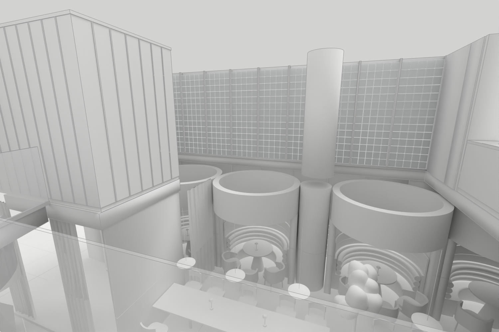
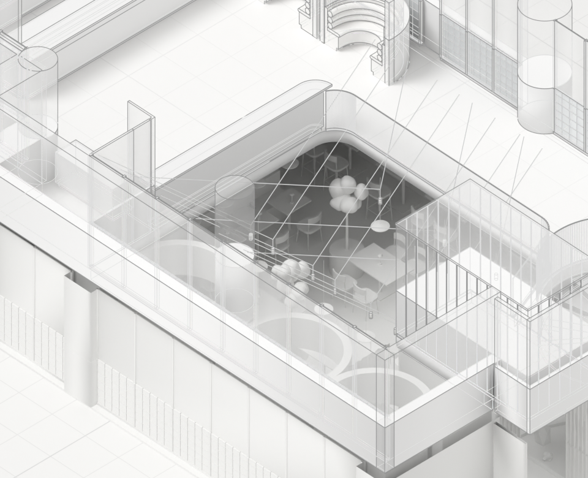
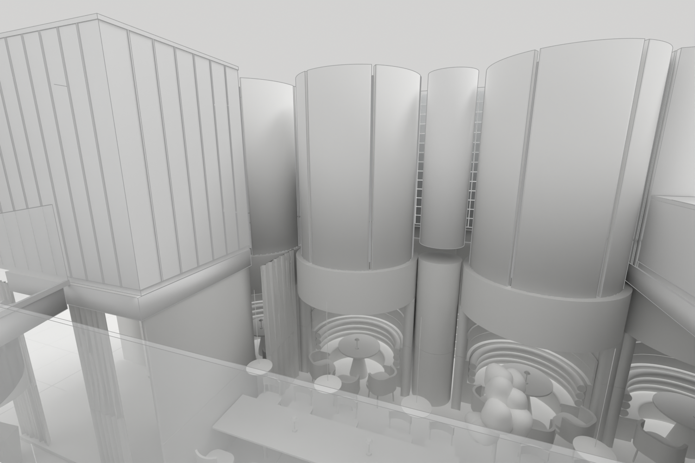
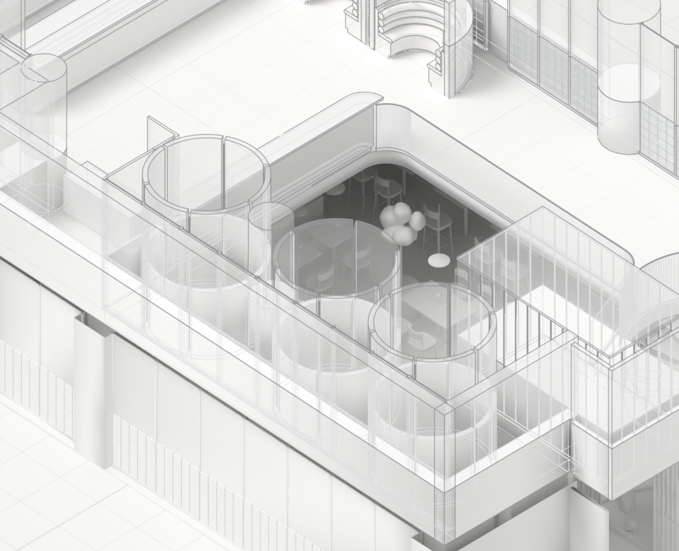
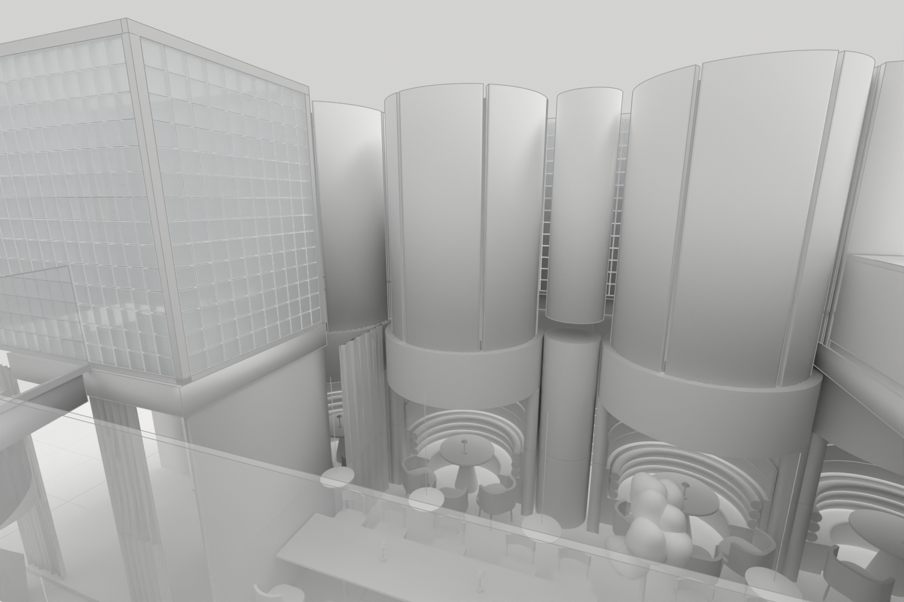
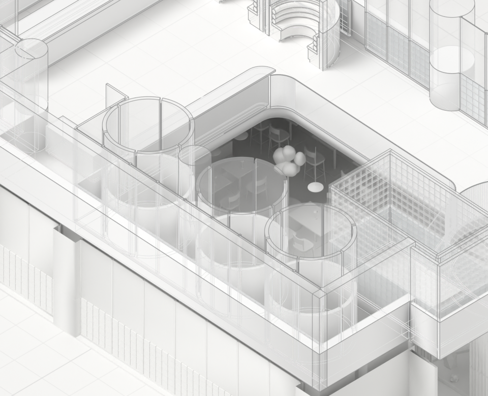

Restaurant · 1er étage · le vide au-dessus des tambours : quatre propositions
25/11/2026 · chaque proposition est modélisée à l'échelle, vue depuis la mezzanine et sur la carte
Au-dessus des tables, on n'avait encore rien modélisé. Dans le vrai lieu, ce n'est pas vide :
les tambours se lisent sur toute la double hauteur, et des câbles tendus portent de petites lampes au-dessus des
tables (photo 33). Voici quatre façons de le traiter, dont une pour le bloc au-dessus de l'entrée. Le rez-de-chaussée
est en gris clair ; les vues de gauche sont prises depuis le bord droit du vide, celles de droite sont la vue 3D de la
carte, en fantôme.

Le vrai lieu, photo 33 : les tambours, les câbles, les lampes

V0 · Aujourd'hui, le vide est laissé vide. Les tambours du rez-de-chaussée s'arrêtent à 3,00 m, sous leur anneau. Au-dessus, rien jusqu'au plafond de la mezzanine : 3,35 m de vide.

V1 · Le vrai lieu, les câbles tendus et leurs petites lampes. C'est ce que montrent les photos 9, 26 et 33. Au-dessus des tables, de petites lampes cylindriques pendent au bout de câbles tendus en diagonale jusqu'aux deux bords du vide, à 2,50 m du sol du bas. Les câbles se croisent en une toile légère. Sur la carte, ce sont des traits fins qui ne cachent rien.


V2 · Trois colonnes, les tambours montent jusqu'au plafond. Chaque tambour se prolonge au-dessus de son anneau par un tube de six lames, séparées par des fentes de lumière, jusqu'au plafond de la mezzanine (photo 33, où les tambours montent haut avec leurs fentes). Le haut reste ouvert : vu d'en haut, on voit toujours les banquettes. Ce sont tes « trois colonnes », qui traversent les deux étages.
V3 · Trois halos, un anneau de lumière au-dessus de chaque tambour. Un anneau fin de 2,5 m de diamètre, suspendu par trois câbles au-dessus de chaque tambour, à 0,90 m au-dessus du sol de la mezzanine : à hauteur des yeux pour qui est à la tablette. Vu du bas, il couronne la banquette. Le vide reste ouvert.


V4 · Trois colonnes et une lanterne, le bloc mêlé aux colonnes. Les trois colonnes de V2, et le bloc au-dessus de l'entrée devient une lanterne en pavés de verre dans un cadre d'acier noir, comme les façades. Elle est creuse : un puits de lumière au-dessus de l'entrée, qui prolonge la rangée de colonnes. Quatre volumes de lumière au bord du vide.
Questions
- Lequel des quatre prototypes pour le vide ? On peut aussi en combiner deux : les câbles de V1 vont avec les colonnes de V2 ou les halos de V3.
- Pour le bloc : on le garde en métal noir (V1 à V3), ou il devient la lanterne de V4 ?